输入输出设备和驱动：从一根 GPIO 线到 file_operations
课程：2026 春季学期《操作系统原理》
讲师：蒋炎岩（jyy）
官方课程主页：https://jyywiki.cn/OS/2026/
官方讲义：https://jyywiki.cn/OS/2026/lect22.md
视频来源：Bilibili BV1dYLq6gE8W
版权说明：课程讲义与幻灯片归蒋炎岩所有，采用 Creative Commons BY-NC 4.0 许可；本电子书是对课堂讲授的书面化重构，保留出处与许可说明。
导语：计算机真正“看得见”的部分
(参考时间: 00:00)
操作系统课程前几部分主要在讲 CPU、地址空间、进程和并发。这些内容都是用户平时“看不见”的：
- 进程如何被虚拟化；
- 线程如何同步；
- GPU 如何执行海量线程。
而用户实际接触到的计算机，是键盘、鼠标、屏幕、摄像头、打印机、磁盘和网络：
输入输出设备是计算世界与物理世界之间的桥梁。
flowchart LR
A["CPU / 内存"] --> B["I/O 控制器"]
B --> C1["键盘 / 鼠标"]
B --> C2["屏幕 / 打印机"]
B --> C3["磁盘 / 网卡"]
B --> C4["摄像头 / 传感器"]
C1 --> D["物理世界"]
C2 --> D
C3 --> D
C4 --> D
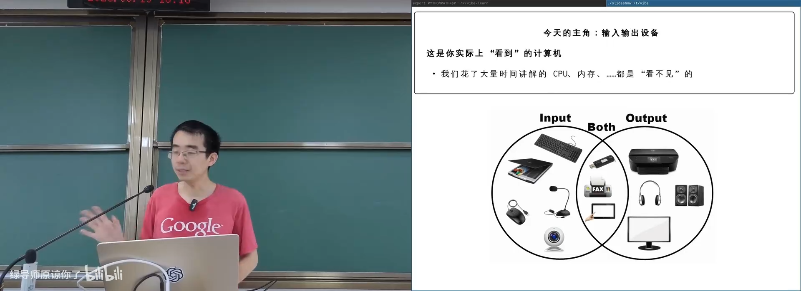
📷 用户直接接触到的计算机几乎全是 I/O 设备
回到原视频 (00:02:30)
1. I/O 设备的最小模型
1.1 Canonical Device Model
(参考时间: 00:04)
一个设备在 CPU 看来可以简化成“几组约定好功能的寄存器”：
- Status：设备是否 ready，是否有数据，是否出错；
- Command：要求设备执行什么操作；
- Data：读写实际数据。
设备内部可能非常复杂，但 CPU 只需和这几类寄存器交互。
flowchart LR
CPU["CPU"] --> S["Status Register"]
CPU --> C["Command Register"]
CPU --> D["Data Register"]
S --> DEV["Device Controller"]
C --> DEV
D --> DEV
DEV --> PHYS["Physical Device"]
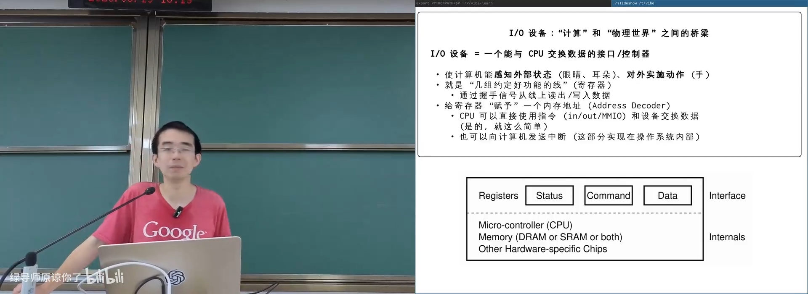
📷 Status、Command、Data 构成最简设备接口
回到原视频 (00:05:30)
1.2 Port I/O、MMIO 与中断
(参考时间: 00:06)
寄存器可以通过两种方式映射给 CPU：
- Port I/O：需要单独的 I/O 地址空间，如 x86 的
in/out； - Memory-mapped I/O：寄存器被映射到物理地址，直接使用 load/store 访问。
x86:
inb / outb → I/O 地址空间
ARM / RISC-V:
load / store → MMIO 地址
设备还能通过中断通知 CPU。操作系统可以把它理解成一个等待事件的线程：
device thread:
P(semaphore)
interrupt handler:
V(semaphore)
flowchart TD
A["设备产生数据"] --> B["拉高中断线"]
B --> C["CPU 跳转中断处理程序"]
C --> D["V(semaphore)"]
D --> E["唤醒设备线程"]
E --> F["读取设备数据"]
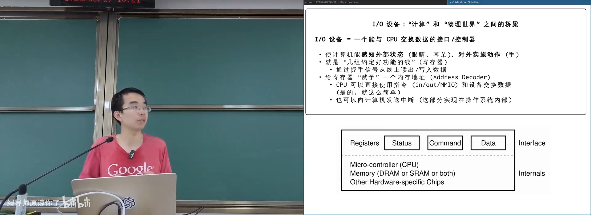
📷 MMIO、Port I/O 与中断共同连接 CPU 和设备
回到原视频 (00:07:30)
2. 从最简单的设备开始
2.1 GPIO LED
(参考时间: 00:09)
GPIO（General Purpose Input/Output）可以直接读取或写入电平：
0 = 低电平
1 = 高电平（通常 3.3V）
在树莓派上，程序可以写出一个寄存器值来控制 LED。用户态程序则可以通过类似文件接口操作：
int fd = open("/sys/class/leds/power/brightness", O_WRONLY);
write(fd, "1", 1);
讲师指出：
既然可以驱动 LED，就可以驱动继电器、马达或其他物理执行器。
理论上，从控制一个灯到控制更复杂的外部设备，接口本质没有区别。
flowchart LR
A["用户程序"] --> B["write 文件"]
B --> C["设备驱动"]
C --> D["GPIO 寄存器"]
D --> E["LED / 继电器"]
E --> F["物理动作"]
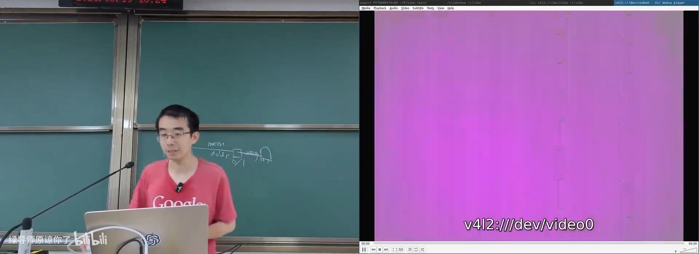
📷 GPIO 寄存器可以直接控制 LED 电平
回到原视频 (00:10:30)
2.2 串口 UART
(参考时间: 00:13)
UART 是 Universal Asynchronous Receiver/Transmitter。x86 上的 COM1 常见基址为 0x3F8：
#define COM1 0x3f8
static int uart_init() {
outb(COM1 + 2, 0);
outb(COM1 + 3, 0x80);
outb(COM1 + 0, 115200 / 9600);
// ...
}
static void uart_tx(AM_UART_TX_T *send) {
outb(COM1, send->data);
}
static void uart_rx(AM_UART_RX_T *recv) {
recv->data = (inb(COM1 + 5) & 0x1)
? inb(COM1)
: -1;
}
Linux 中 /dev/ttyS0 可能就对应一个 UART。寄存器足够简单，但组合起来就能实现终端通信。
flowchart TD
A["程序写 COM1 data"] --> B["UART 发送器"]
B --> C["串行电平变化"]
C --> D["接收端 UART"]
D --> E["接收寄存器"]
E --> F["程序读取字符"]
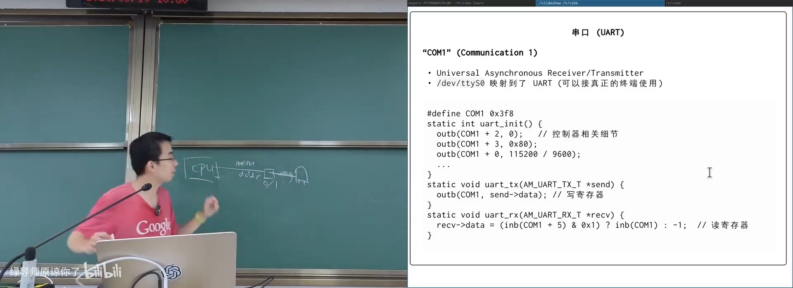
📷 UART 通过少量寄存器实现字符收发
回到原视频 (00:14:30)
2.3 PS/2 键盘控制器
(参考时间: 00:16)
IBM PC/AT 8042 键盘控制器使用少量线：
- Data；
- Clock；
- VCC；
- GND。
常见端口：
0x60 = data
0x64 = status / command
通过命令字节可以：
- 控制 Caps Lock 灯；
- 设置重复速度；
- 设置重复延迟。
早期键盘可以在控制器内部自动重复按键，以减少 CPU 负担。后来更多重复逻辑转移到软件。
flowchart LR
A["键盘矩阵"] --> B["8042 Controller"]
B --> C["Port 0x60 Data"]
B --> D["Port 0x64 Status"]
D --> E["CPU / Driver"]
E --> F["LED / Repeat Rate"]
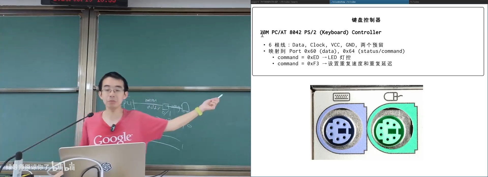
📷 PS/2 控制器用端口寄存器管理键盘状态
回到原视频 (00:17:30)
2.4 ATA 磁盘
(参考时间: 00:18)
ATA / IDE 磁盘同样暴露寄存器：
primary: 0x1f0 - 0x1f7
secondary: 0x170 - 0x177
读取一个扇区：
void readsect(void *dst, int sect) {
waitdisk();
out_byte(0x1f2, 1); // sector count
out_byte(0x1f3, sect); // LBA low
out_byte(0x1f4, sect >> 8); // LBA mid
out_byte(0x1f5, sect >> 16); // LBA high
out_byte(0x1f6, (sect >> 24) | 0xe0); // drive
out_byte(0x1f7, 0x20); // read command
waitdisk();
for (int i = 0; i < SECTSIZE / 4; i++)
((uint32_t *)dst)[i] = in_long(0x1f0);
}
flowchart TD
A["等待磁盘 Ready"] --> B["写扇区数量"]
B --> C["写 LBA 地址"]
C --> D["写 READ Command"]
D --> E["等待数据 Ready"]
E --> F["从 Data 端口读取"]
F --> G["写入内存"]
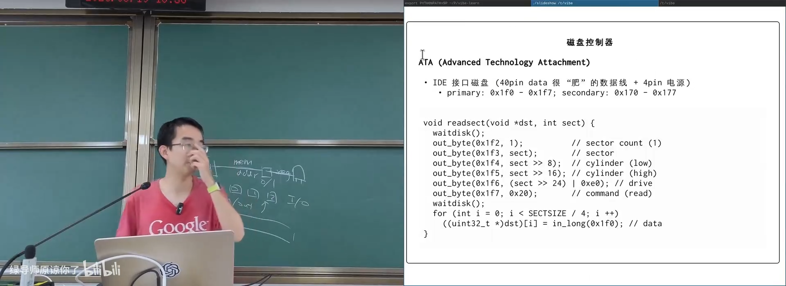
📷 ATA 磁盘通过端口寄存器和 PIO 搬运扇区
回到原视频 (00:19:30)
3. 打印机：设备也是一台程序解释器
3.1 绘图仪模型
(参考时间: 00:21)
早期打印机其实可以看成绘图仪：
- X 轴移动；
- Y 轴移动；
- 抬笔、落笔。
只要有直线移动和抬落笔，就能画出任意图形。
flowchart LR
A["Pen Up / Down"] --> D["Draw"]
B["X Movement"] --> D
C["Y Movement"] --> D
D --> E["Arbitrary Lines"]
E --> F["Arbitrary Graphics"]
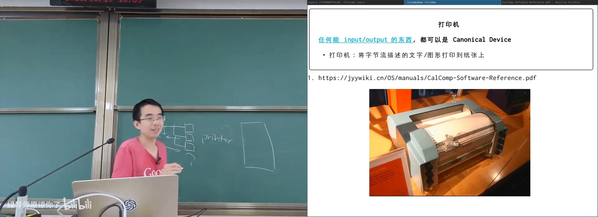
📷 绘图仪通过 X/Y 移动和抬笔落笔绘制图形
回到原视频 (00:22:30)
3.2 从低级命令到页面描述语言
(参考时间: 00:24)
打印机本身可以理解为一台解释器：
高级页面描述
↓ 编译器
打印机控制指令
↓ Data Register
打印机解释器
↓
机械动作
当打印内容越来越复杂，就需要更高层的页面描述语言：
- PCL；
- PostScript；
- PDF；
- IPP / AirPrint。
flowchart TD
A["LaTeX / Markdown"] --> B["PostScript / PDF"]
B --> C["Printer Command Stream"]
C --> D["Printer Interpreter"]
D --> E["Raster / Vector Operations"]
E --> F["Printed Page"]
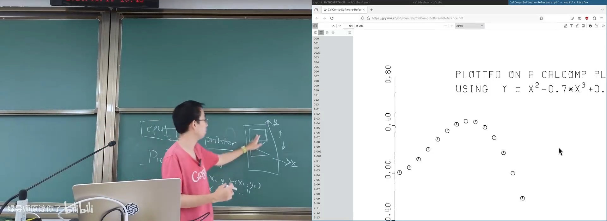
📷 设备可以解释程序，而不仅仅接收原始字节
回到原视频 (00:25:30)
3.3 PCL 命令流
(参考时间: 00:26)
PCL 使用 ESC 前缀和命令字符：
<ESC>*t300R 设置 300 DPI
<ESC>*r1A 开始光栅图形
<ESC>*b100W 设置光栅宽度
<ESC>*b0M 设置无压缩模式
<ESC>*b100V 发送 100 字节数据
<binary raster data>
<ESC>*rB 结束光栅图形
flowchart LR
A["PCL Escape Sequence"] --> B["设置分辨率"]
B --> C["开始 Raster"]
C --> D["发送图像数据"]
D --> E["结束 Raster"]
E --> F["打印"]
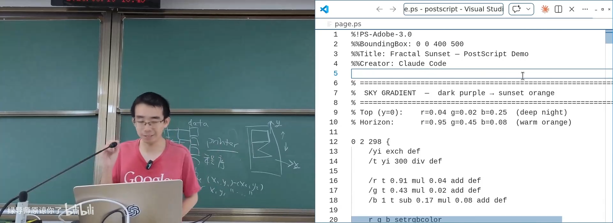
📷 PCL 用转义命令流描述打印和图像数据
回到原视频 (00:27:30)
3.4 PostScript 与 PDF
(参考时间: 00:28)
PostScript 是图灵完备的页面描述语言：
- 构造路径；
- 填充路径；
- 绘制曲线；
- 设置字体；
- 渲染文本；
- 引用外部对象。
PDF 保留了页面描述能力，但去掉了 PostScript 的通用执行能力，成为更安全的容器格式。
flowchart TD
A["PostScript Program"] --> B["Path Construction"]
B --> C["Stroke / Fill"]
C --> D["Text / Font"]
D --> E["Page Output"]
F["PDF"] --> B
F --> G["Safer Container"]
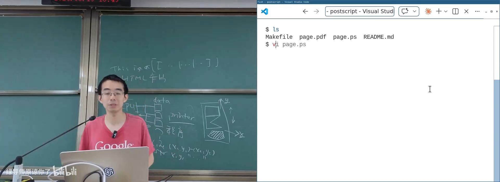
📷 PostScript 用图形状态机描述高质量页面
回到原视频 (00:30:30)
4. UVC 摄像头：标准化带来的即插即用
(参考时间: 00:32)
如今大量 USB 摄像头都是“免驱”的，原因是它们遵循 UVC（USB Video Class）。
UVC 协议流程包括：
- 枚举设备；
- 查询能力；
- 协商格式、分辨率、帧率；
- 分配缓冲区；
- 开始视频流；
- 逐帧读取 MJPEG / H.264。
虽然是 USB 设备，本质上仍然是交换字节流。
flowchart TD
A["USB 插入"] --> B["枚举 UVC 设备"]
B --> C["Query Capability"]
C --> D["协商 Format / Resolution / FPS"]
D --> E["分配 Buffer"]
E --> F["Stream On"]
F --> G["逐帧读取"]
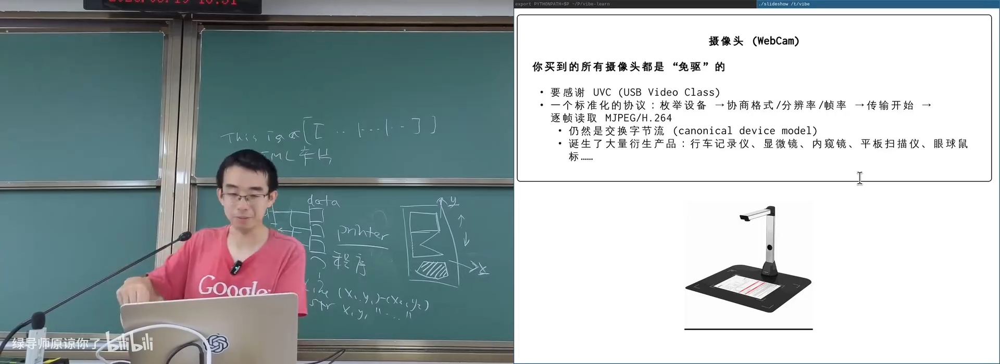
📷 UVC 标准让摄像头可以被通用类驱动直接管理
回到原视频 (00:32:30)
5. 协处理器与 DMA
5.1 DMA 是一台只会 memcpy 的小 CPU
(参考时间: 00:35)
DMA（Direct Memory Access）可以被理解为一台极简处理器：
- 与 CPU 共享内存；
- 可以访问部分 I/O 端口；
- 只执行固定形式的搬运；
- 不需要取指、译码和通用指令。
Intel 8237 有四个通道：
void T_i8237() {
while (1) {
for (int i = 0; i < 4; i++) {
struct channel_t *ch = &channels[i];
if (ch->count-- > 0) {
if (ch->mode == READ)
ch->io = ch->mem[ch->addr++];
else
ch->mem[ch->addr++] = ch->io;
break;
}
}
}
}
flowchart LR
CPU["CPU 配置 DMA"] --> DMA["DMA Controller"]
MEM["Memory"] <--> DMA
DMA <--> IO["I/O Port"]
DMA --> IRQ["完成后中断 CPU"]
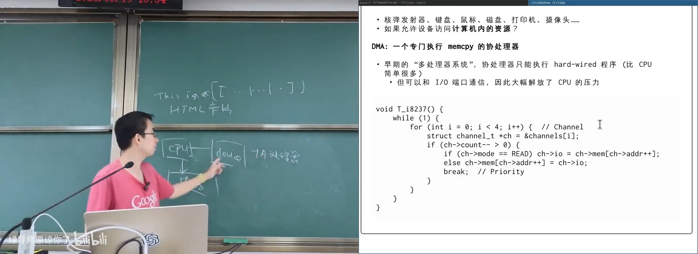
📷 DMA 把大批量搬运从 CPU 指令流中卸载出去
回到原视频 (00:35:30)
5.2 GPU 与 NPU 也是协处理器
(参考时间: 00:38)
GPU 看起来像一台完整计算机：
- CPU 配置设备寄存器；
- kernel 和数据通过 DMA 送到显存；
- CPU 发出启动命令；
- GPU 调度大量线程执行。
NPU 可能共享系统内存，但控制方式仍然类似：
准备输入
↓
配置设备
↓
启动 kernel / inference
↓
等待完成
↓
读取输出
flowchart TD
A["CPU"] --> B["配置控制寄存器"]
B --> C["DMA 拷贝代码和数据"]
C --> D["通知加速器启动"]
D --> E["GPU / NPU 执行"]
E --> F["DMA 写回结果"]
F --> G["中断 CPU"]
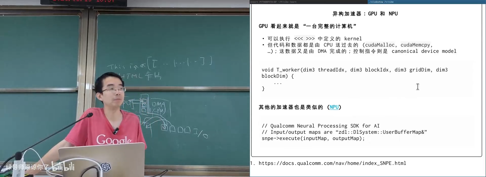
📷 GPU/NPU 是带独立执行能力的异构协处理器
回到原视频 (00:38:30)
6. 总线：连接万千设备
6.1 总线也是特殊的 I/O 设备
(参考时间: 00:40)
总线负责：
- 设备注册；
- 地址和数据转发；
- 设备发现；
- 中断发送；
- DMA 配置。
CPU 只需要和总线协议交互，就能动态发现设备。
flowchart LR
CPU["CPU"] --> BUS["Bus Controller"]
BUS --> D1["Device 1"]
BUS --> D2["Device 2"]
BUS --> D3["Device 3"]
D1 --> MEM["Memory"]
D2 --> MEM
BUS --> IRQ["Interrupts"]
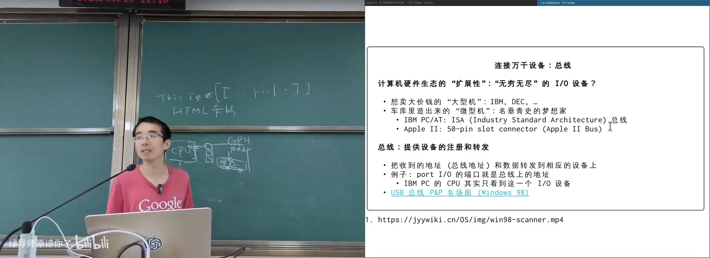
📷 总线把设备注册、地址转发、中断和 DMA 统一起来
回到原视频 (00:41:30)
6.2 PCIe、USB 与设备发现
(参考时间: 00:43)
PCIe 设备可以插入 CPU 直连 lane：
lspci
lsusb -t
操作系统在发现新设备后匹配驱动。设备 ID 可以用于识别厂商和型号。
flowchart TD
A["插入设备"] --> B["总线发送中断"]
B --> C["OS 扫描总线"]
C --> D["读取 Device / Vendor ID"]
D --> E["匹配驱动"]
E --> F["初始化设备"]
F --> G["创建 /dev 节点"]
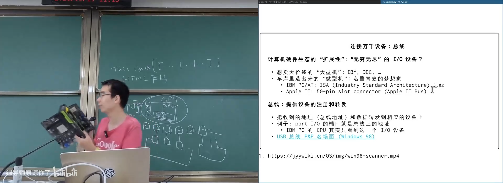
📷 设备发现后由操作系统匹配并加载驱动
回到原视频 (00:44:30)
6.3 驱动 bug 会直接影响内核稳定性
(参考时间: 00:46)
早期热插拔经常出现蓝屏或卡死，因为驱动运行在内核中。Windows 后来重构了驱动子系统。
flowchart LR
A["热插拔"] --> B["自动加载 Driver"]
B --> C{"驱动正确？"}
C -- "是" --> D["设备可用"]
C -- "否" --> E["内核崩溃 / 系统卡死"]
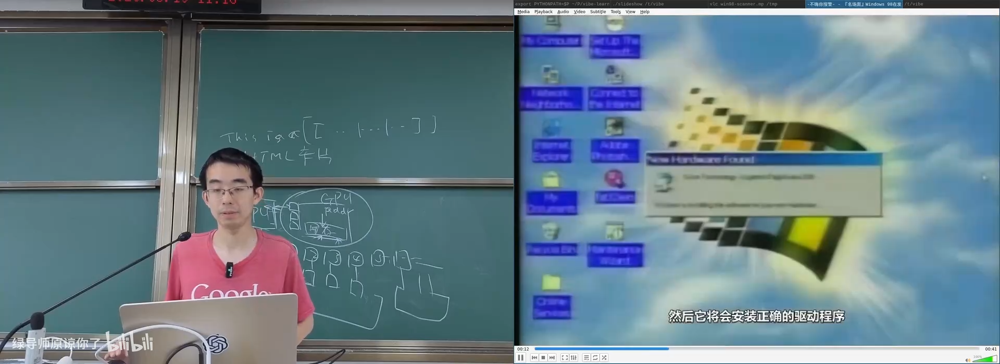
📷 设备驱动错误可能直接破坏整个内核
回到原视频 (00:46:30)
6.4 PCIe 的带宽、供电与一致性
(参考时间: 00:47)
现代高速设备大多连接 PCIe：
- GPU；
- FPGA；
- 网卡；
- NVMe SSD；
- USB Bridge。
PCIe 特性包括：
- 点对点高带宽；
- 自带 DMA；
- Message-signaled Interrupts；
- 插槽基础供电约 75 W；
- 高功耗显卡需要额外 6-pin / 8-pin 供电。
课程提到 PCIe 6.0 x16 可达约 128 GB/s。
flowchart TD
A["PCIe x16"] --> B["GPU"]
A --> C["NVMe SSD"]
A --> D["800 Gbps NIC"]
A --> E["FPGA"]
A --> F["USB Bridge"]
A --> G["DMA + Interrupt + Power"]
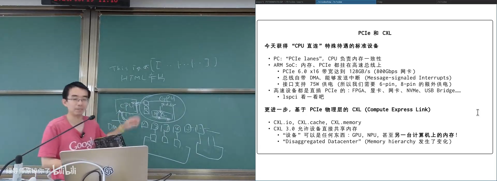
📷 PCIe 为高速设备提供带宽、DMA、中断和供电
回到原视频 (00:48:30)
6.5 CXL 与远端内存
(参考时间: 00:50)
CXL（Compute Express Link）建立于 PCIe 物理层之上，提供：
- CXL.io；
- CXL.cache；
- CXL.memory。
它允许设备甚至另一台机器共享内存，让数据中心走向内存解耦和远端内存池。
flowchart LR
A["Local CPU"] --> B["Local Memory"]
A --> C["CXL Link"]
C --> D["Remote Memory Pool"]
C --> E["Accelerator Memory"]
D --> F["Disaggregated Datacenter"]
E --> F
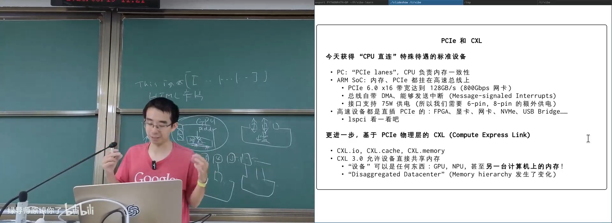
📷 CXL 让远端内存像本地地址空间一样被访问
回到原视频 (00:51:30)
7. 应用程序如何访问设备
7.1 为什么不能让程序直接访问寄存器
(参考时间: 00:53)
如果多个进程直接操作设备：
- 设备被共享；
- 访问需要同步；
- 同步遗漏会造成 data race；
- 打印机作业、GPU 命令可能互相覆盖；
- 低层设备接口会泄漏给所有应用。
flowchart TD
A["多个应用"] --> B["同一设备寄存器"]
B --> C["并发访问"]
C --> D{"正确同步？"}
D -- "否" --> E["Data Race / 输出损坏"]
D -- "是" --> F["可安全共享"]
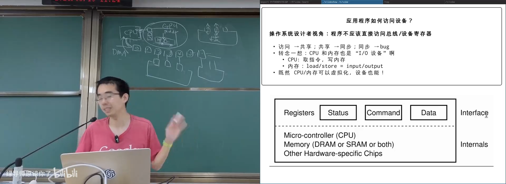
📷 共享设备需要操作系统统一虚拟化和同步
回到原视频 (00:54:30)
7.2 Everything is a File
(参考时间: 00:55)
操作系统把设备抽象为文件：
struct file_operations {
struct module *owner;
loff_t (*llseek)(struct file *, loff_t, int);
ssize_t (*read)(struct file *, char __user *, size_t, loff_t *);
ssize_t (*write)(struct file *, const char __user *, size_t, loff_t *);
int (*mmap)(struct file *, struct vm_area_struct *);
long (*unlocked_ioctl)(struct file *, unsigned int, unsigned long);
// ...
};
应用程序继续使用：
open();
read();
write();
mmap();
ioctl();
close();
flowchart LR
A["Application"] --> B["open/read/write"]
B --> C["VFS"]
C --> D["file_operations"]
D --> E["Device Driver"]
E --> F["Hardware Registers"]
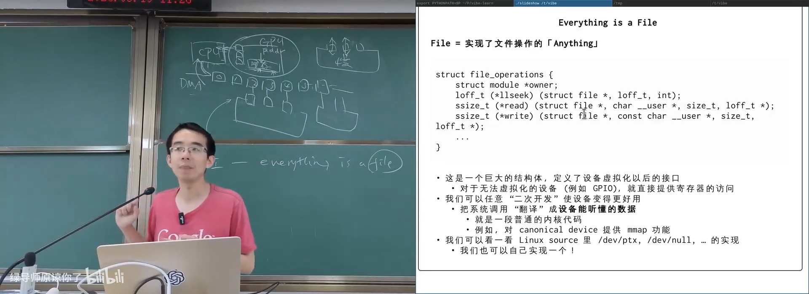
📷 设备驱动通过 file_operations 接入文件系统接口
回到原视频 (00:56:30)
7.3 驱动是系统调用到设备语言的翻译器
(参考时间: 00:58)
设备驱动负责：
- 等待设备 ready；
- 轮询状态或等待中断；
- 把数据写入设备寄存器；
- 从设备寄存器读取数据；
- 分配和回收缓冲区；
- 处理错误与并发访问。
flowchart TD
A["read(fd, buf, n)"] --> B["VFS"]
B --> C["Driver read"]
C --> D{"Device Ready？"}
D -- "否" --> E["轮询 / 等待中断"]
E --> D
D -- "是" --> F["读取寄存器"]
F --> G["复制到用户缓冲区"]
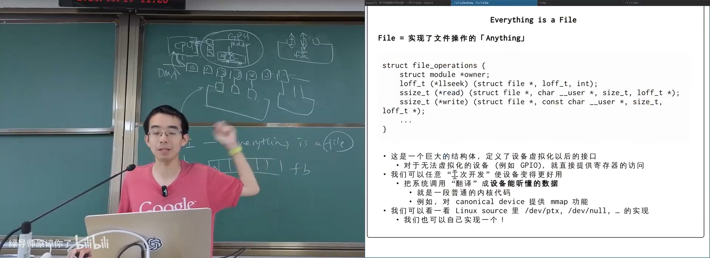
📷 设备驱动把统一文件接口翻译为具体硬件操作
回到原视频 (00:58:30)
8. 实现一个设备驱动
8.1 /dev/null
(参考时间: 00:59)
/dev/null 是最简单的伪设备：
read总是返回 0；write接收所有数据，但直接丢弃；- 返回写入字节数，假装写入成功。
read(/dev/null) → EOF
write(/dev/null) → count, data discarded
flowchart LR
A["read(/dev/null)"] --> B["return 0"]
C["write(/dev/null, n)"] --> D["discard data"]
D --> E["return n"]
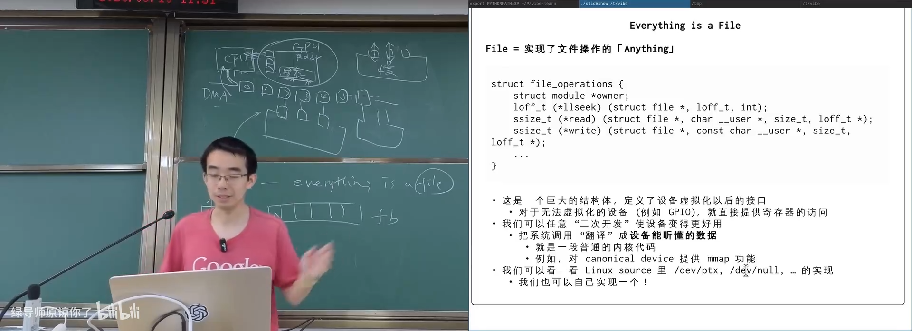
📷 /dev/null 通过极简驱动实现数据黑洞
回到原视频 (01:00:30)
8.2 Launcher 设备
(参考时间: 01:01)
课程实现了一个名为 launcher 的字符设备：
read(launcher) → "this is dangerous"
write(launcher, password) → check password
密码正确时，驱动在 kernel log 中输出发射信息；密码错误时记录拒绝信息。
flowchart TD
A["read(launcher)"] --> B["返回 this is dangerous"]
C["write(launcher, secret)"] --> D{"密码正确？"}
D -- "否" --> E["记录 Incorrect secret"]
D -- "是" --> F["执行 launch 操作"]
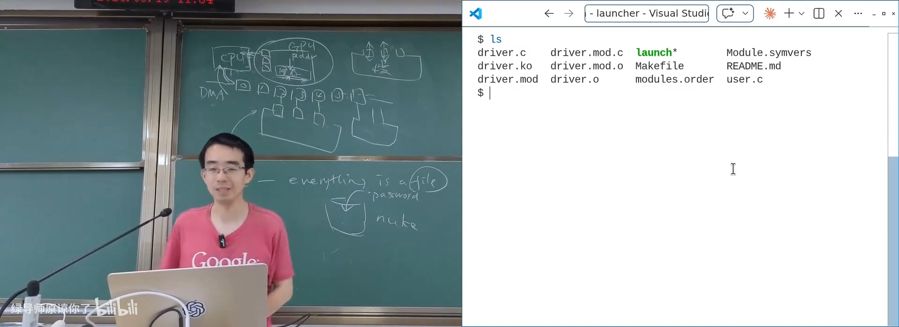
📷 Launcher 驱动把用户写操作转换为受保护设备命令
回到原视频 (01:03:30)
8.3 注册设备并加载模块
(参考时间: 01:03)
驱动初始化时：
- 注册字符设备；
- 创建设备节点；
- 实现
read、write； - 模块退出时清理。
insmod launcher.ko
cat /dev/nuke0
echo wrong-secret > /dev/nuke0
echo correct-secret > /dev/nuke0
flowchart LR
A["insmod launcher.ko"] --> B["register device"]
B --> C["/dev/nuke0"]
C --> D["read / write"]
D --> E["driver callbacks"]
E --> F["hardware side effect"]
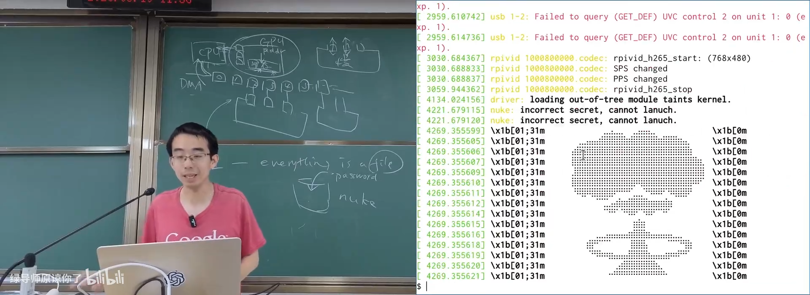
📷 加载模块后设备节点出现，用户态通过文件接口访问
回到原视频 (01:05:30)
9. ioctl：控制接口的复杂性
9.1 数据之外还有控制
(参考时间: 01:06)
read/write 适合数据流，但设备还有大量控制功能：
- 打印机卡纸、清洁、装订；
- 键盘跑马灯、宏、重复速度；
- 终端窗口大小和行模式；
- 磁盘健康、缓存策略；
- GPU 命令提交。
这些功能通常由 ioctl 提供：
int ioctl(int fd, unsigned long request, ...);
flowchart TD
A["Device"] --> B["Data Path"]
A --> C["Control Path"]
B --> D["read / write / mmap"]
C --> E["ioctl"]
E --> F["Device-specific request"]
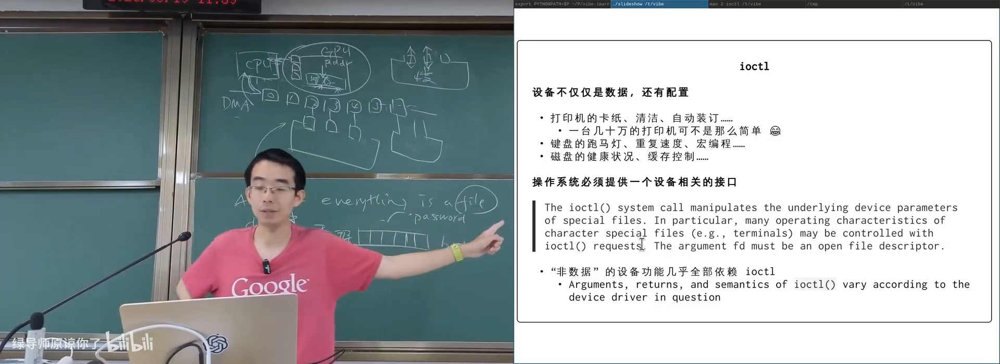
📷 设备数据与设备控制由不同接口承担
回到原视频 (01:08:30)
9.2 ioctl 参数和设备相关语义
(参考时间: 01:09)
ioctl 的 request 和参数含义完全由设备驱动定义：
ioctl(fd, DEVICE_GET_STATUS, &status)
ioctl(fd, DEVICE_SET_MODE, mode)
ioctl(fd, DEVICE_SUBMIT_COMMAND, &cmd)
内核无法理解每个字段，只负责把请求转交驱动。
flowchart LR
A["Application"] --> B["ioctl(fd, request, arg)"]
B --> C["VFS"]
C --> D["Driver unlocked_ioctl"]
D --> E["解释 request / arg"]
E --> F["配置设备"]
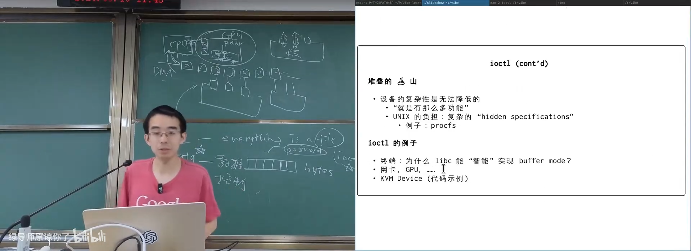
📷 ioctl 把设备特定语义原样交给驱动解释
回到原视频 (01:11:30)
9.3 GPU 通过 ioctl 提交命令
(参考时间: 01:13)
GPU 是有独立内存的协处理器：
- 用户通过
mmap准备命令与数据； - 通过
ioctl提交 buffer 地址； - 驱动启动 DMA；
- 通过门铃寄存器通知 GPU 执行；
- 完成后通过中断或同步对象通知。
flowchart TD
A["用户准备 Command Buffer"] --> B["mmap"]
B --> C["ioctl 提交地址"]
C --> D["Driver 启动 DMA"]
D --> E["写 Doorbell Register"]
E --> F["GPU 执行"]
F --> G["中断 / 同步"]
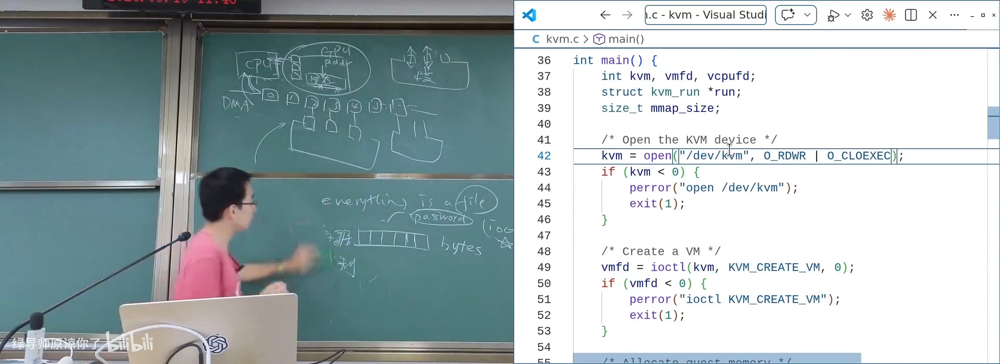
📷 GPU 驱动通过 mmap 和 ioctl 提交渲染或计算命令
回到原视频 (01:14:30)
9.4 KVM：整个虚拟化子系统由一个设备接口控制
(参考时间: 01:15)
Linux 的 /dev/kvm 通过 ioctl 暴露硬件虚拟化：
- 创建 VM；
- 设置 Guest 内存区域；
- 创建 VCPU；
- 设置/读取寄存器；
- 执行
KVM_RUN； - 接收 VM Exit 原因。
flowchart TD
A["open(/dev/kvm)"] --> B["ioctl KVM_CREATE_VM"]
B --> C["ioctl SET_USER_MEMORY_REGION"]
C --> D["ioctl KVM_CREATE_VCPU"]
D --> E["ioctl KVM_RUN"]
E --> F{"VM Exit？"}
F -- "是" --> G["处理 Exit Reason"]
G --> E
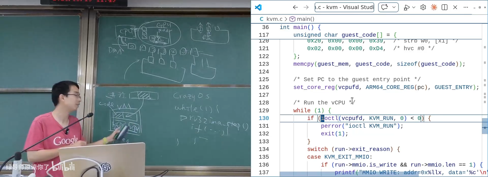
📷 KVM 用 ioctl 完成 VM、内存、VCPU 和运行控制
回到原视频 (01:17:30)
10. 完整例子：用 V4L2 读取摄像头
10.1 Video for Linux 2
(参考时间: 01:20)
Linux 把 UVC 摄像头抽象成 /dev/videoX，由 V4L2 子系统提供统一 ioctl。
典型流程：
fd = open("/dev/video0", O_RDWR);
ioctl(fd, VIDIOC_QUERYCAP, &cap);
ioctl(fd, VIDIOC_ENUM_FMT, &fmt);
ioctl(fd, VIDIOC_S_FMT, &format);
ioctl(fd, VIDIOC_REQBUFS, &req);
ioctl(fd, VIDIOC_QUERYBUF, &buf);
mmap(/* buffer */);
ioctl(fd, VIDIOC_QBUF, &buf);
ioctl(fd, VIDIOC_STREAMON, &type);
ioctl(fd, VIDIOC_DQBUF, &buf);
flowchart TD
A["open /dev/video0"] --> B["QUERYCAP"]
B --> C["ENUM_FMT / S_FMT"]
C --> D["REQBUFS"]
D --> E["QUERYBUF / mmap"]
E --> F["QBUF"]
F --> G["STREAMON"]
G --> H["DQBUF"]
H --> I["处理一帧图像"]
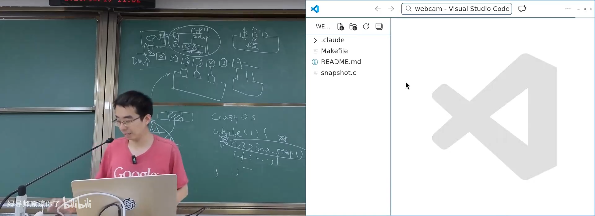
📷 V4L2 用 ioctl 和 mmap 完成摄像头配置与取帧
回到原视频 (01:20:30)
10.2 多缓冲区生产者-消费者
(参考时间: 01:22)
摄像头和应用程序的生产/消费速度不同，因此使用多个 buffer：
Driver 填充 buffer
↓
Application 取走 buffer
↓
Application 处理完毕
↓
重新 QBUF 入队
flowchart LR
C["Camera"] --> Q["Buffer Queue"]
Q --> A["Application"]
A --> P["Process Frame"]
P --> R["Re-queue Buffer"]
R --> Q
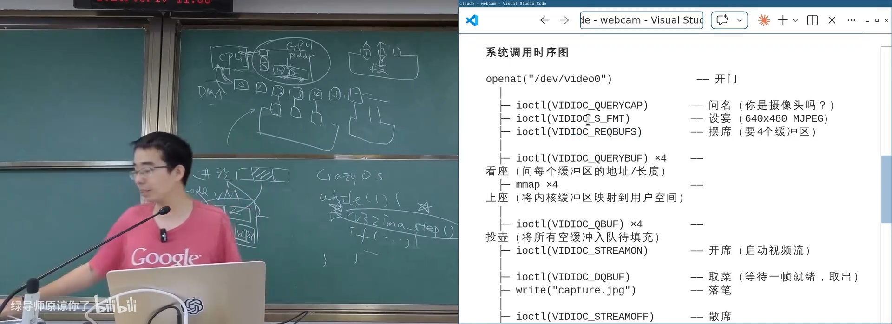
📷 多缓冲区队列吸收摄像头与用户程序的速度差异
回到原视频 (01:22:30)
11. GPU 软件栈：驱动之上还有库和运行时
(参考时间: 01:24)
GPU 访问通常形成多层抽象：
Application
↓
Mesa / Vulkan / OpenGL
↓
libdrm
↓
ioctl
↓
DRM Kernel Driver
↓
GPU
这和用户态系统调用、libc、应用框架的层次非常相似。
flowchart TD
A["Application"] --> B["OpenGL / Vulkan"]
B --> C["Mesa"]
C --> D["libdrm"]
D --> E["ioctl"]
E --> F["DRM Driver"]
F --> G["GPU Commands"]
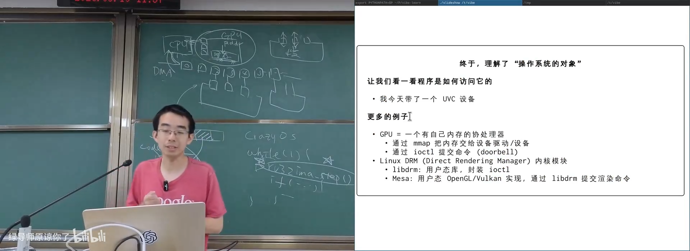
📷 GPU 用户态库最终通过 ioctl 和驱动提交命令
回到原视频 (01:24:30)
12. 总结：复杂设备最终都要落到寄存器
输入输出设备形态各异：
- GPIO LED；
- UART；
- 键盘；
- 磁盘；
- 打印机；
- 摄像头；
- DMA；
- GPU、NPU；
- PCIe、USB、CXL。
但在操作系统看来，它们最终都被抽象成实现了 file_operations 的对象：
flowchart LR
A["Physical Device"] --> B["Controller Registers"]
B --> C["Device Driver"]
C --> D["file_operations"]
D --> E["open / read / write / mmap / ioctl"]
E --> F["Application"]
核心结论：
从最简单的 LED 到复杂的 GPU，设备接口最终都可以归结为寄存器和数据交换；操作系统通过设备驱动把底层复杂性封装成统一、可共享、可同步的文件对象。
附：官方参考与延伸阅读
- GPIO LED
- Canonical Device 与 CalComp 软件参考手册
- PostScript 实验
- IPP 协议 RFC 8011
- 高通 SNPE / NPU SDK
- Windows 98 USB 热插拔演示
- Launcher 设备驱动实验
- KVM Device 实验
- WebCam / V4L2 实验
- Operating Systems: Three Easy Pieces, Chapter 36: I/O Devices
官方课程资料：
版权与署名：本讲课程材料由蒋炎岩（jyy）编写。课程讲义与幻灯片采用 Creative Commons BY-NC 4.0 许可；本电子书保留课程出处、作者署名与许可说明。